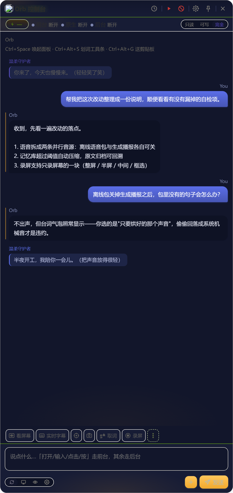
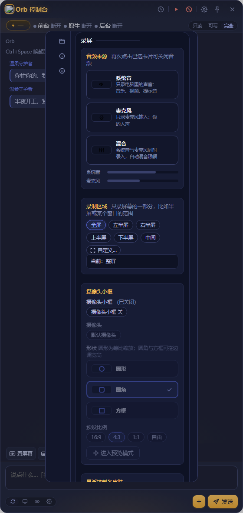
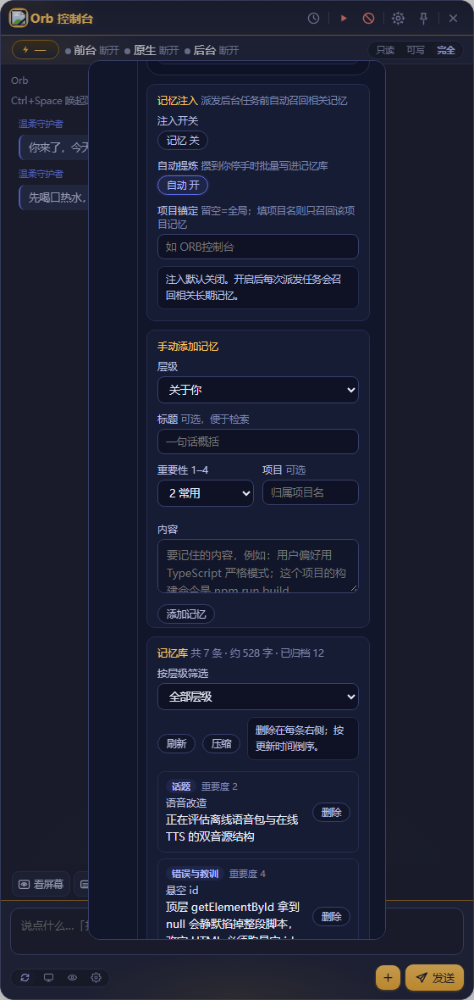
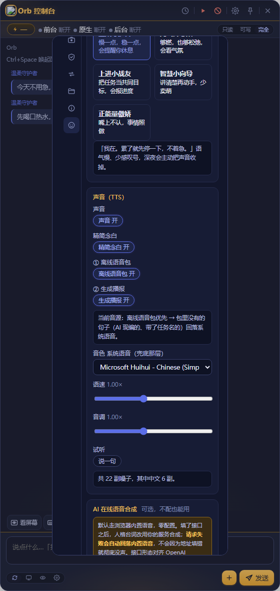
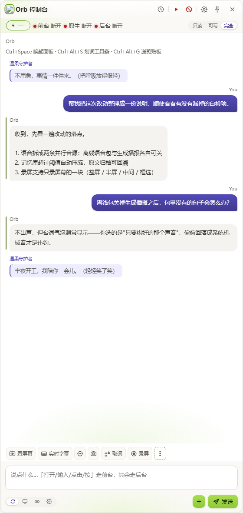
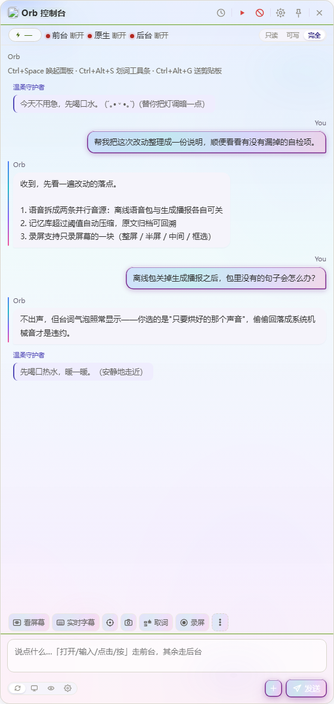
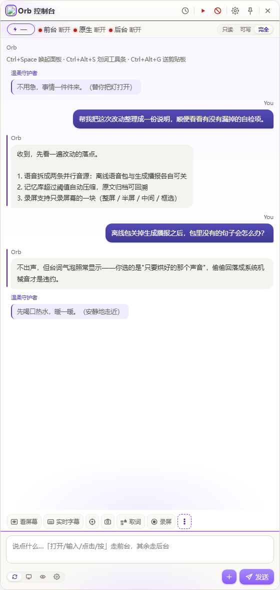

01 手上的活
让 AI 帮个忙，
比自己动手还累？
先截图、再粘贴、再用文字描述「那个按钮在右下角」——它回你一段操作步骤，最后还得你自己去点。
→ 它自己看屏幕，也自己动手v1.4.5 已发布·Windows 10 / 11 x64·MIT 开源
一个真的会操作你电脑的桌面 AI 员工。说一句话，它自己截图看屏幕、判断该点哪里， 然后替你点击、输入、滚动——做完把过程回给你。 悬浮球常驻桌面，五个性格、三百六十句离线语音，干完活还会在你卡住的时候说一句「先歇会儿」。

↑ 深空主题实机截图。左边细线小气泡是人格的台词——它会在你做完一件事的时候开口，声音关着也照样显示。
先说三个问题
我们不是先想功能再找场景，是先被这三件事烦到，才动手写的。
01 手上的活
先截图、再粘贴、再用文字描述「那个按钮在右下角」——它回你一段操作步骤，最后还得你自己去点。
→ 它自己看屏幕，也自己动手02 动脑的活
网页里的对话框进不了你的终端、读不了你的磁盘，给的思路再漂亮也落不了地，最后还得你自己敲。
→ 派给本机 CLI，跑完再回填03 没人陪的活
永远是「好的，我明白了」。它不知道你已经连着坐了六个小时，也不会在你卡住的时候说一句「先歇会儿」。
→ 五个性格，会说话，也会闭嘴工作性 · 一
你不需要学「提示词工程」，也不用先选模式。说清楚要什么，它按活的类型自己分流；想指定也可以。
直接操作你的电脑：点击、输入、快捷键、滚动、长按、拖动。它自己在你的屏幕上动手，不是教你点。
把重活派给本机的 CodeBuddy CLI（headless 一次性执行），读代码库、跑批处理。答案边跑边长出来，不用干等。
「截图 → 视觉模型 → 动作 → 再截图」的闭环，模型自己决定下一步。坐标用千分比而不是像素，高分辨率下也不数错。
工作性 · 二
录制回放最容易翻车的地方不是录，是放：过两天按钮挪了位置、多了个弹窗，回放就一路点空。所以每条工作流都能配「遇到意外怎么办」。
不调模型，最快。适合点错了也没事的流程。
宁可不做也不乱点。适合会改数据、会发消息的流程。
卡住那一步问一次该怎么走，问完继续。
让视觉模型推回正轨，再交还回放。判定在后端，不靠感觉。
后两档只在「配了锚定文字、且那句话确实找不到」的步骤上触发，其余步骤永远纯回放——所以开了它也不会每条都变慢。 配套还有：循环轮次标记、重复片段折叠、定时 / 文件变化 / 热键三类触发器。
工作性 · 三
整屏录下来一大半是无关桌面。现在可以只录一块——而且存的是相对屏幕的比例，换显示器、改缩放之后，「左半屏」还是左半屏。

「隐藏控制台」和「录制区域」都在这一页，不用翻两次。
工作性 · 四
长期记忆分七层：人格、偏好、规则常驻在场，项目 / 事实 / 教训 / 话题按当前任务检索。 常驻层还有 1200 字预算上限——装不下的丢尾，并明说「另有 N 条未注入」，不搞无声截断。

记忆库直接写着「共 N 条 · 约 N 字 · 已归档 N」，不用猜。
陪伴性
个性是独立的一层：人格不会改 AI 回答的内容，也不插手你的活。它只在有结果的节点开口——做完了、失败了、你被夸了、你坐太久了。
我在。累了就先停一下，不着急。
搞定啦！快夸我快夸我！٩(^ᴗ^)۶
第 3 步了，还差最后一下。
这个能拆成两步，先看第一步。
……又不是特意为你做的。
以前「关掉在线接口」只能连带把声音一起关掉。现在离线语音包和生成播报各有各的开关，四种组合自己挑——点下面试试（这是示意，不是真的在播）。
两条都开：离线包优先，包里没有的句子回落生成播报。

真实界面：两个开关下面那行字，会随组合变化。
安全
所以「怎么拦住它」被当成第一功能来做，而不是事后补的限制条款。长期记忆也只在本地：召回与压缩都在你机器上完成，除拼进你自己的任务，不外传。
Ctrl + Alt + Backspace 一键中断，或点顶栏红色急停键。随时可打断，不留后台动作。
只读 / 工作区可写 / 完全访问三档，随会话保存。不开「完全访问」就不会有视觉循环。
前台执行时目标窗口亮起一圈边框——你随时能看到它正在操作谁。
删除、支付、发送这类不可逆操作，模型必须先发起确认，不能自己决定。
本机桥的每个接口都要启动时随机生成的 X-Orb-Token——浏览器里的任意网页都遥控不了你的电脑。
不含任何遥测。密钥只在内存里过一遍，不落盘、不写日志、不上传。
主题
全部走同一套语义令牌。所以录屏选区、摄像头摆位框、悬浮控制条、字幕窗，换主题不会留在旧配色上。



下载
自解压单文件：运行后展开到 %LOCALAPPDATA%\ORBConsole 并启动。不安装、不写注册表、不用预装 Node 或 Python。
Windows 10 / 11 x64 · 211 MB · 双击即用 · 未签名（首次运行请在 SmartScreen 选「更多信息 → 仍要运行」）
SHA256（便携版 .exe）
82d06fa4fa6605dda2e90b060245fb59…